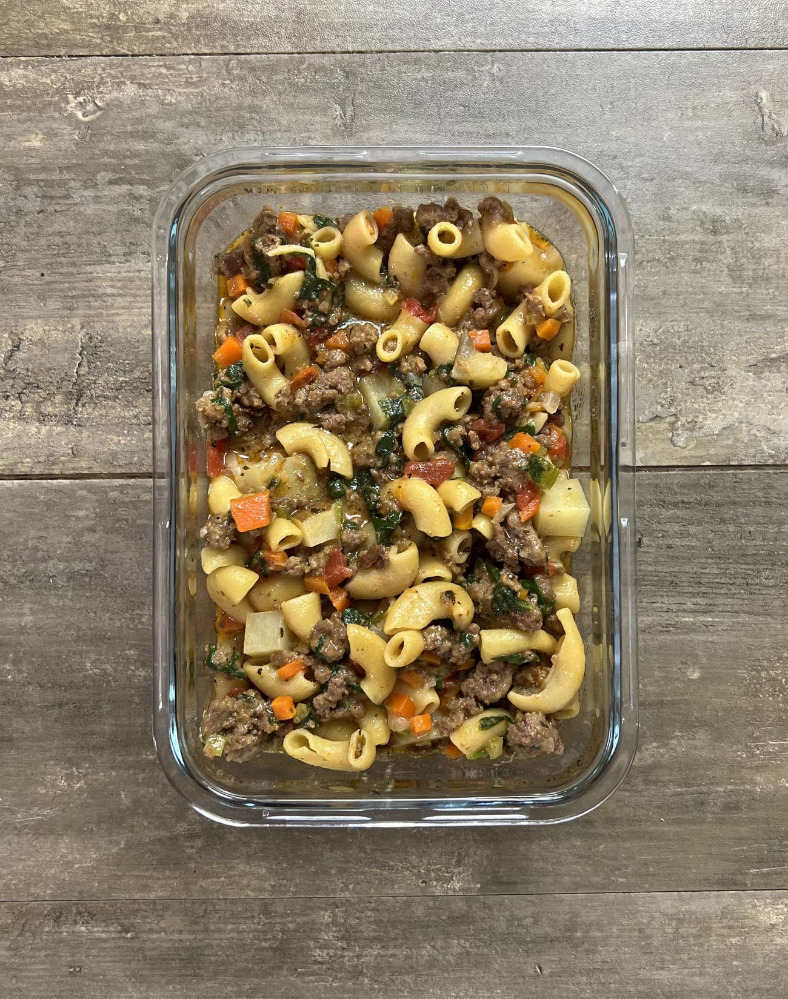

This HamBULKer Helper is a weight gain friendly meal prep with over 1,000 calories per dish to help you easily get in the energy you need to grow muscle. A combination of pasta, beef, potatoes and cheese make up the bulk of the calories but this meal still includes a decent serving of vegetables too.
Recipe content taken from Meal Prep Manual.